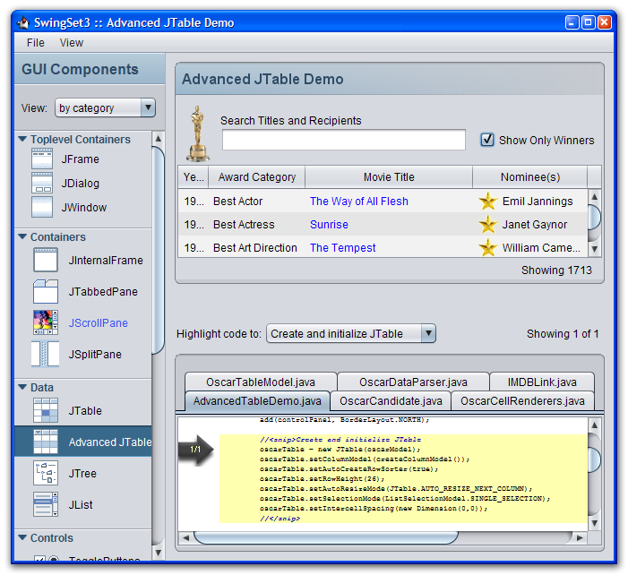

SwingSet3 is a demo application which highlights the components and features of the Swing user interface toolkit in Java 6. It showcases the Nimbus look-and-feel, but also allows you to dynamically change the look-and-feel to other look-and-feels available on the running platform. Another key feature of SwingSet3 is that it displays the source code for each demo and allows you to easily highlight the specific source code fragment that was used to implement a specific aspect of that demo.
SwingSet3 requires Java 6 and can be run using JavaWebstart:
SwingSet3 is being developed as a public java.net project under SwingLabs and we welcome your participation:
Issues and bugs should be filed on the java.net project.
